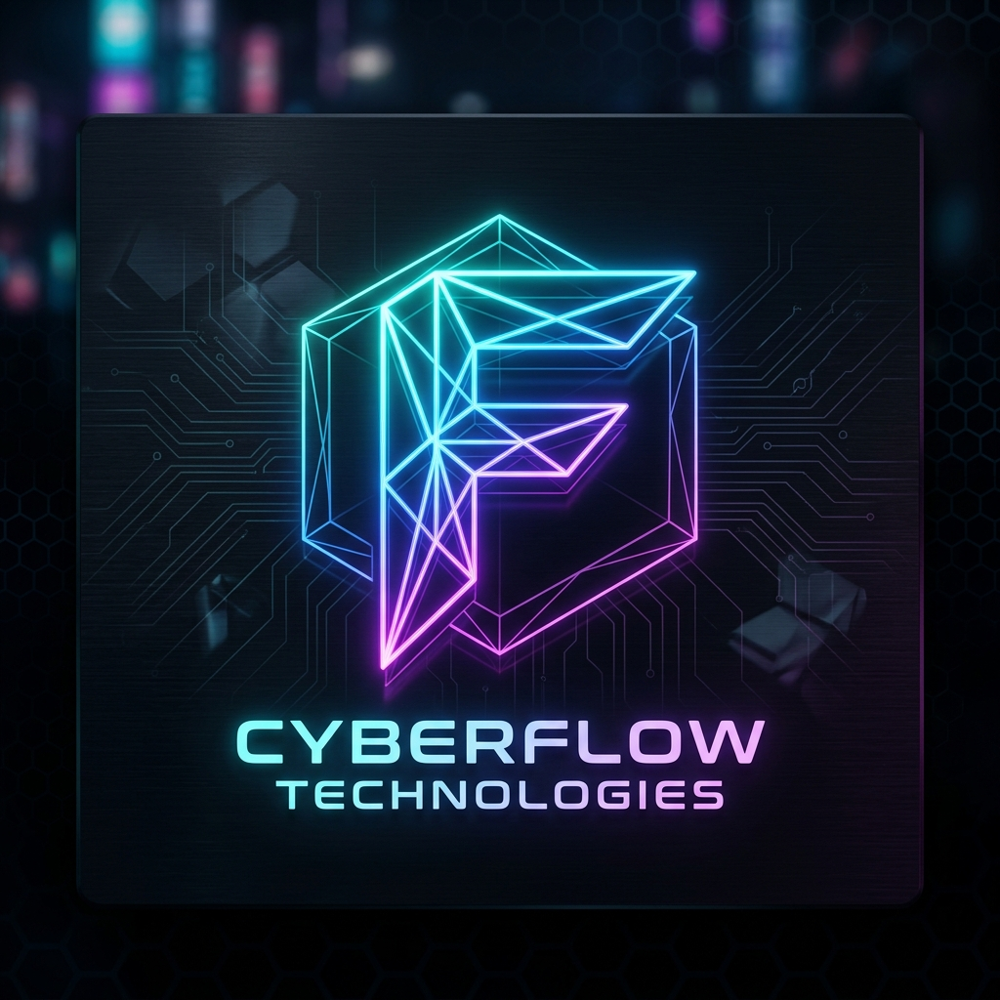

projectZero Fork
Initial codebase established. Base C modules for RF analysis ported.



PREMIUM HARDWARE AUDITING | F-SERIES
The ultimate security research platform for Flipper Zero hardware. Optimized for low-latency signal analysis, credential harvesting, and sub-ghz tactical operations.
Unified, real-time multi-protocol telemetry and advanced cyber operations suite. Expandable, plugin-driven, and visually immersive—engineered for Flipper Zero and next-gen hardware research.
Proprietary toolchain designed for high-intensity security research, signal analysis, and decentralized mesh synchronization. Zero legacy dependencies. Professional FLLC engineering.
[+] Initializing WiGLE wardriver...
[+] GPS Lock: 33.4792° N, 112.0833° W
[+] Scanning 2.4GHz spectrum...
[!] Found 14 Vulnerable APs (WEP/WPS)
[+] Handshake captured: NETGEAR_42
[+] Exporting to pcap... SUCCESS
CYBERFLIPPER uses an automated ingestion pipeline for RF data. Every signal captured is hashed and compared against our global dictionary.
Cross-referencing hardware architecture with real-time signal telemetry.
Active neural uplinks detected across the F-SERIES decentralized intelligence mesh.
Initial codebase established. Base C modules for RF analysis ported.
Merged 40+ independent security repositories including CyberChef and Hak5 payloads.
Global brand synchronization. F-SERIES Identity established. Native qFlipper compatibility.
Ready to upgrade your Flipper Zero? Get the latest stable release of CYBERFLIPPER.
DOWNLOAD RELEASE v1.2.1